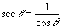

.

Descripción:
- Desarrolla, en conjunto con el
profesor, algunos problemas que implican el uso de funciones.

Objetivos:
- Aplicar los conocimientos
sobre funciones.
- Reconocer la importancia del
uso de funciones para el diseño de un programa.

Modalidad:

Instrucciones:
- Implementa las siguientes funciones, recuerda
que las funciones se definen antes de la función del main y del
script principal.
-
La función
main
()
debe mandar llamar a la función que imprima el menú
correspondiente y de acuerdo a la opción seleccionada por el
usuario le dé la oportunidad de ejecutar cualquiera de las
funciones que han sido construidas. Utiliza el estatuto de control
if anidado. Recuerda que la captura de datos debe ser
realizada en la sección del main. Valida opciones incorrectas.
-
En el
script principal manda
llamar a la función main.

Ejercicios:
.
- La función
pies_metros (pies) que recibe una
cantidad en pies y regresa su equivalencia en metros.
La relación de conversión entres estas dos unidades de longitud
es: 1 ft = 0.3048 mts.
Casos de prueba:
Input:
Número de opción (1. Pies a metros)
Input:
Cantidad en pies
Output:
Cantidad en metros
|
Input:
1
Input:
8.4
Output:
2.56
|
Input: 1
Input: 12.5
Output: 3.81
|
- La función
metros_pies (metros) que
recibe una cantidad en metros y regresa su equivalencia en pies.
Casos de prueba:
Input:
Número de opción (2. Metros a pies)
Input:
Cantidad en metros
Output:
Cantidad en pies
|
Input:
2
Input:
10
Output:
32.81
|
Input: 2
Input: 32.5
Output: 106.63
|
- La
función unidades_longitud ()
que despliegue el siguiente menú en pantalla:
.
2. Metros a pies
3. Salir
La función
main ()
que utilice la función unidades_longitud y de
acuerdo a la opción seleccionada por el usuario utilice la función
apropiada de las implementadas anteriormente, para calcular las
equivalencias de las unidades de longitud. Utiliza el estatuto de
control
if anidado. Recuerda que la captura de datos debe ser
realizada en la sección del main. Valida opciones incorrectas.
Casos de prueba:
Input:
Número de opción (3. Salir o una opción inválida)
Output:
Mensaje correspondiente
|
Input:
3
Output:
Adios
|
Input: 5
Output: ERROR OPCION
INVALIDA
|
Input:
-4
Output:
ERROR OPCION INVALIDA
|
-
En el
script principal manda
llamar a la función main.
-
Guarda tu archivo como:
D1_Matricula.py.
- La
función grados_radianes (grados)
que recibe una cantidad en grados y regresa su equivalencia en
radianes. Utiliza la constante math.pi de la
librería math.
.

- La
función cosecante (grados)
que recibe un ángulo en grados y regresa la cosecante de
dicho ángulo.

Utiliza la
función math.sin(x) de la librería math, que calcula
la tangente del ángulo x especificado en radianes, por lo tanto,
para poder usar esta función, es necesario primero transformar el
ángulo en grados a radianes, para ello utiliza la función
grados_radianes implementada anteriormente. Como puedes ver, es
posible utilizar una función dentro de otra función. La única
condición que demanda el compilador, es que la función a utilizar
dentro, haya sido definida anteriormente.
Casos de prueba:
Input:
Número de opción (1. Cosecante)
Input:
Ángulo en grados
Output:
El resultado de la cosecante
|
Input:
1
Input:
90
Output:
1.0
|
Input: 1
Input: 270
Output: -1.0
|
- La
función secante (grados)
que recibe un ángulo en grados y regresa la secante de dicho
ángulo.
..

Utiliza la
función math.cos(x) de la librería math, que calcula
la tangente del ángulo x especificado en radianes, por lo tanto
para poder usar esta función, es necesario primero transformar el
ángulo en grados a radianes como en la función anterior.
Casos de prueba:
Input:
Número de opción (2. Secante)
Input:
Ángulo en grados
Output:
El resultado de la cotangente
|
Input:
2
Input:
180
Output:
-1.0
|
Input: 2
Input: 360
Output: 1.0
|
- La
función identidades ()
que despliegue el siguiente menú en pantalla:
1. Cosecante
2. Secante
3. Salir
-
La función
main ()
que utilice la función identidades y de
acuerdo a la opción seleccionada por el usuario utilice la función
apropiada de las implementadas anteriormente, para calcular la
identidad trigonométrica elegida. Utiliza el estatuto de control
if anidado. Recuerda que la captura de datos debe ser
realizada en la sección del main. Valida opciones incorrectas.
Casos de prueba:
Input:
Número de opción (3. Salir o una opción inválida)
Output:
Mensaje correspondiente
|
Input:
3
Output:
Adios
|
Input: 6
Output: ERROR OPCION
INVALIDA
|
Input:
-4
Output:
ERROR OPCION INVALIDA
|
-
En el
script principal manda
llamar a la función main.
-
Guarda tu archivo como:
D2_Matricula.py.

Recursos:
6. Funciones

Especificaciones
de entrega en Canvas:
- Formato de entrega: py
- Nombre de los entregables: D1_matricula.py y
D2_matricula.py
- Medio de entrega: Se entrega en la sección de Laboratorio:
Funciones
Instrucciones para enviar tus archivos por Canvas:
- Haz clic en la actividad de
Laboratorio: Funciones.
- Haz clic en el botón de Entregar
tarea.
- En el fólder de Carga del archivo,
haz clic en el botón de Examinar y localiza el
archivo *.py. Si necesitas agregar más archivos, haz clic en
+Agregue otro archivo, haz clic en el botón de
Examinar y localiza el otro archivo *.py.
- Cuando hayas terminado de subir tus
archivos, haz clic en el botón de Entregar tarea y
listo!!
|